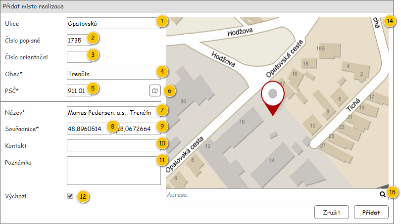
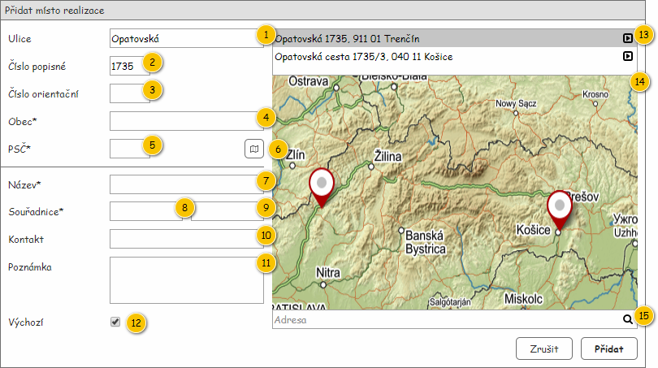
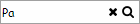
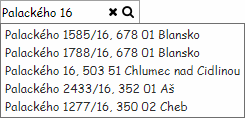

Formulář slouží k založení či editaci entity Místo realizace.
Na vstupu pak může být předána jedna z uvedených skupin entit – viz tabulka:
| Vstupní data | Poznámka | Pomocné proměnné |
|---|---|---|
| Používá se především pro předvyplnění prázdného formuláře. | Adresa: předaná Adresa. Úplná editace: TRUE. |
| Jedná se o editaci již vytvořeného Místa realizace, kdy je specifikováno, v jakém rozsahu je editace povolena. | Adresa:
Úplná editace: informace předaná na vstupu. |
Poznámka:


| Callout | Komponenta | Nadpis | Typ komponenty | Příklad hodnoty | Hodnota | Výchozí hodnota | Formát | Zpřístupněná | Viditelná | Chování | Validace | Poznámka |
|---|---|---|---|---|---|---|---|---|---|---|---|---|
| 1 | Ulice | Ulice | TextBox | Opatovská | Entita Adresa – viz pomocná proměnná Adresa. | – | Pokud pomocná proměnná Úplná editace nabývá hodnoty TRUE. | Vždy | – | Maximálně 80 znaků. | – | |
| 2 | Číslo popisné | Číslo popisné | TextBox | 1735 | Entita Adresa – viz pomocná proměnná Adresa. | – | <Číslo popisné> | Pokud pomocná proměnná Úplná editace nabývá hodnoty TRUE. | Vždy | – | Maximálně 15 znaků. | – |
| 3 | Číslo orientační | Číslo orientační | TextBox | A | Entita Adresa – viz pomocná proměnná Adresa. | – | <Číslo orientační> | Pokud pomocná proměnná Úplná editace nabývá hodnoty TRUE. | Vždy | – | Maximálně 15 znaků. | – |
| 4 | Obec | Obec* | TextBox | Trenčín | Entita Adresa – viz pomocná proměnná Adresa. | – | Pokud pomocná proměnná Úplná editace nabývá hodnoty TRUE. | Vždy | – | Povinné. Maximálně 80 znaků. | – | |
| 5 | PSČ | PSČ* | TextBox | 911 01 | Entita Adresa – viz pomocná proměnná Adresa. | – | Pokud pomocná proměnná Úplná editace nabývá hodnoty TRUE. | Vždy | – | Povinné. Maximálně 15 znaků. | – | |
| 6 | Nalezení adresy | – | Button | – | – | – | – | Vždy | Pokud pomocná proměnná Úplná editace nabývá hodnoty TRUE. | Dopředné geokódování | – | – |
| 7 | Název | Název* | TextBox | Marius Pedersen a.s., Trenčín | Entita Místo realizace. | – | Vždy | Vždy | – | Povinné. Maximálně 255 znaků. | – | |
| 8 | Zeměpisná šířka | Souřadnice* | TextBox | 48,8960514 | Entita Místo realizace. | – | Vždy | Vždy | – | Povinné. Desetinné číslo. | – | |
| 9 | Zeměpisná délka | – | TextBox | 18,0672664 | Entita Místo realizace. | – | Vždy | Vždy | – | Povinné. Desetinné číslo. | – | |
| 10 | Kontakt | Kontakt | TextBox | p. Vynosil, 0902 123 456 | Entita Místo realizace. | – | Pokud pomocná proměnná Úplná editace nabývá hodnoty TRUE. | Vždy | – | Maximálně 255 znaků. | – | |
| 11 | Poznámka | Poznámka | TextBox | V neděli zavřeno. | Entita Místo realizace. | – | Pokud pomocná proměnná Úplná editace nabývá hodnoty TRUE. | Vždy | – | Maximálně 255 znaků. | – | |
| 12 | Výchozí místo realizace | Výchozí | CheckBox | TRUE | Entita Místo realizace. | TRUE | Pokud pomocná proměnná Úplná editace nabývá hodnoty TRUE. | Vždy | – | – | – | |
| 13 | Nalezené adresy | – | Grid | – | Entita Adresa. | – | Pokud není dostupné Číslo orientační:
Pokud není dostupné Číslo popisné:
| Vždy | Pokud pomocná proměnná Úplná editace nabývá hodnoty TRUE. Pokud je při dopředném geokódování nalezena více než jedna adresa. | – | – | Tabulka obsahuje pouze jeden sloupec s formátovaným výpisem nalezené adresy. Hlavička tabulky není zobrazena. Řádek obsahuje tlačítko pro výběr požadované adresy (ikona: ra-location). |
| 14 | Mapa | – | Map | – | – | – | – | Vždy | Vždy | Změna souřadnic | – | – |
| 15 | Hledání adresy | – | AutoSuggestTextBox | – | – | – | – | Vždy | Pokud pomocná proměnná Úplná editace nabývá hodnoty FALSE. | Hledání adresy | – | Pole je dostupné pouze v případě, kdy není možné použit Dopředné geokódování. Uživatel tak může v mapě zobrazit požadovanou adresu pomocí tohoto prvku formuláře. |
Poznámka: Ve vytvořené instanci je automaticky doplněna hodnota atributu Stát – Slovenská republika.
Chování vychází z Dopředné geokódování.
Pokud je nalezena pouze jedna adresa, případně pokud je nalezeno adres více a uživatel jednu z nich vybere, dojde navíc k nastavení těchto polí:
Pokud je v mapě zobrazen pouze jeden bod, je možné pomocí změny jeho polohy upravit hodnotu polí pro zadání souřadnic. Uživatel na zobrazený bod v mapě najede myší a stiskne její levé tlačítko. S pohybem myši se mění i poloha zobrazeného bodu. Jakmile uživatel uvolní levé tlačítko myši, Systém umístí bod na novou pozici a aktualizuje hodnoty v polích pro zadání souřadnic.
V případech, kdy není dostupné dopředné geokódování, nemusí být v mapě k dispozici žádný bod. Tato situace pak může nastat i v případech, kdy pomocí dopředného geokódování není nalezena žádná skutečná adresa. V takovém případě pak není v mapě zobrazen žádný bod – pokud v tuto chvíli uživatel klikne do mapy, dojde k vytvoření tohoto bodu a následnému vyplnění polí pro souřadnice (komponenty 8 a 9). Adresa však pomocí zpětného geokódování není získávána! V tuto chvíli máme k dispozici jeden bod, který můžeme ručně přesouvat, jak bylo uvedeno dříve.
Pokud není možné vyhledat adresu pomocí tlačítka pro Dopředné geokódování (komponenta 6), může uživatel v mapě zobrazit požadovanou oblast pomocí pole pro vyhledání adresy – chování je následující:
V tabulce jsou pak zobrazovány nalezené Adresy – formát je následující:
Ovládací prvek se pak může vyskytovat v několika stavech, které jsou naznačeny v tabulce.
V ovládacím prvku je dále zobrazena ikona, která naznačuje, že se jedná o pole pro vyhledávání.
| Drátový diagram | Popis | Poznámka |
|---|---|---|
| Není zadán žádný text. | Na pozadí ovládacího prvku je zobrazen text představující informaci, podle čeho bude vyhledáváno. Text je zobrazen pouze v případě, kdy není v rámci ovládacího prvku zobrazena žádná hodnota.
| |
|  | Není zadán dostatečně dlouhý text, není tedy spuštěno vyhledávání. | Pokud je vložen nějaký text, zobrazí se tlačítko, které umožní tento text odebrat:
|
|  | Je zadán dostatečně dlouhý text, uživateli je tedy nabídnuto prvních 5 nalezených adres. | Pokud je vložen nějaký text, zobrazí se tlačítko, které umožní tento text odebrat:
|
Může nastat situace, kdy není po zadání Adresy uživatelem dostupná hodnota pro atribut Stát. V takovém případě je pro nastavení použita konfigurační hodnota countryIsoCode (viz Konfigurační hodnoty).
Poznámka: Typickým případem je situace, kdy uživatel zadá adresu ručně – nepoužije např. dostupné geokódování.
| Odkaz | Stručný popis změny/doplnění |
|---|---|
| Získání hodnoty pro stát | Doplněn popis chování pro případ, že při zadání adresy není získán stát (naznačeno modře). |
| Odkaz | Stručný popis změny/doplnění |
|---|---|
| Stručný popis | Doplněn popis struktury vstupních dat. |
Aktualizováno chování formuláře dle dat předaných na vstupu. Přidáno pole s možností hledat adresu v mapě pro případy, kdy nejsou přístupná pole pro zadání adresy. | |
| Změna souřadnic | Doplněno chování pro případy, kdy není v mapě k dispozici žádný bod. |
| Hledání adresy | Doplněno chování pro doplněné pole pro hledání v mapě. |
| Odkaz | Stručný popis změny/doplnění |
|---|---|
| Dopředné geokódování | Změna formátu – generování názvu Místa realizace. |